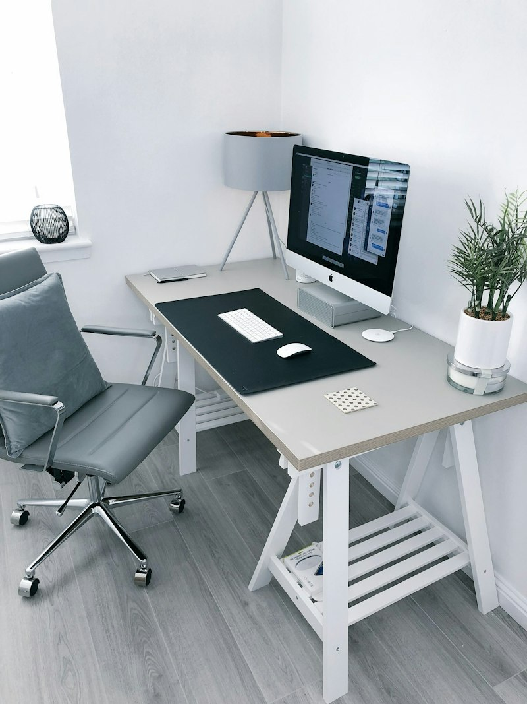

KHÔNG GIAN / 01Ở vừa vặn.
Ở vừa vặn.
Sống thong thả.
Nội thất gỗ và vật dụng nhỏ cho một căn phòng dễ chịu.

Gỗ Nhà — Tuyển chọn nội thấtVật liệu mộc / Đường nét gọn
Đồ dùng cho khoảng riêng
Xem danh mục →
GHI CHÚ VỀ KHÔNG GIANĐo góc phòng.
Đo góc phòng.
Rồi chọn món đồ.
Chiều ngang chiếc bàn, độ cao ghế, khoảng trống để đi lại. Những kích thước nhỏ quyết định sự thoải mái của cả căn phòng.
Cách Gỗ Nhà lựa chọn →